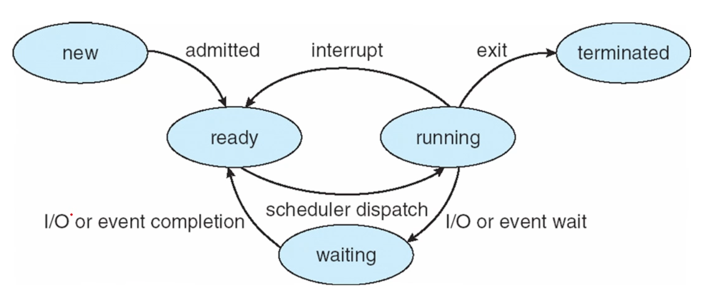

실행중인 프로그램을 프로세스라고 한다. Program in execution. 운영체제 작업의 단위. 프로세스는 그 일을 하기 위해 특정 자원들을 필요로 한다.
하드 디스크에서 메모리로 로드돼서 CPU가 fetch해서 실행할 수 있는 상태의 프로그램을 프로세스라고 한다.
프로세스의 메모리 레이아웃은 다음과 같은 섹션들로 나뉜다.
프로세스는 다섯개의 life cycle을 가진다.
I/O 기다리는 애는 ready가 아니라 waiting으로 감!!

PCB(Process Control Block)이라는 구조체를 만들어서 프로세스를 관리. 프로세스에게 필요한 모든 정보를 여기 담자! 각 프로세스가 가져야 할 정보는 PCB로 handling된다.
프로그램 카운터와 레지스터를 문맥, context라고 한다.
여기서 우리가 살펴본 프로세스는 single thread of execution을 실행한다. 한 번에 한 task밖에 못하니 multiprocessing(운영체제의 핵심 기능, 이거때매 있음!)을 위해서는 여러 쓰레드가 필요하다.
위에 thread에서 용어를 따 와 하나의 프로세스에서 lightweight process인 thread(Chapter4)를 할 수 있게 함. 이게 유리해서 대부분 multithreading 위주 병렬 처리, concurrency를 함.
Multiprogramming의 목적은 동시에 여러 프로세스를 실행시키는 것. At the same time, simultaneously, concurrently 등등 같은 말들이 있지만 parallel한 것과는 의미가 다름. 아무튼 CPU 사용량을 늘리기 위해 이 짓을 함.